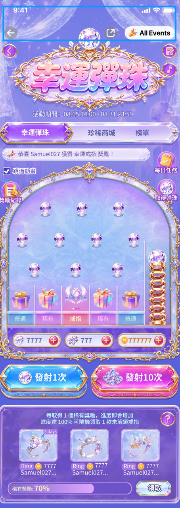
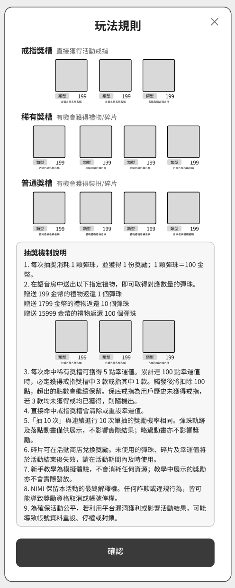
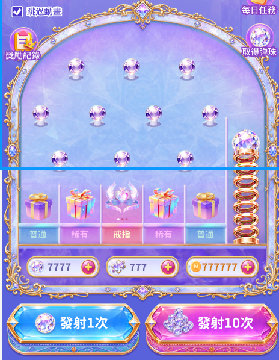
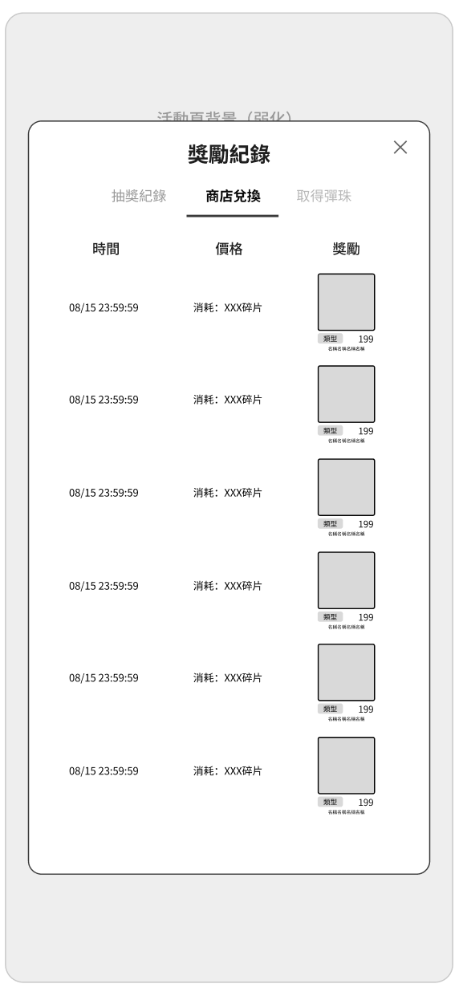

← 返回项目索引
弹珠活动
海外社交产品限时弹珠活动，覆盖菲律宾、缅甸、印尼及华语市场。策划范围包括玩法规则、奖池配置、异常边界与埋点口径。
项目职责PRD / 原型 / 数值 / 对接验收
上线范围四个市场 · 约万人参与
项目类型实习期间上线活动
01 / SYSTEM DESIGN
活动机制与参与路径
送出活动礼物或使用金币购买可获得弹珠；每日任务提供碎片。弹珠用于抽奖，抽奖产出的碎片进入商城兑换与榜单累计。项目交付包括 PRD、原型、数值配置、开发对接及上线验收。
获取弹珠送礼 / 金币购买
→发射抽奖普通 / 稀有 / 戒指
→积累资源碎片 / 幸运进度
→兑换与冲榜商城 / 排名奖励
并行路径：每日任务获得碎片 → 珍稀商城兑换／榜单累计


02 / ECONOMY & PROBABILITY
奖池、保底与兑换数值
五个奖槽按“普通 2 个、稀有 2 个、戒指 1 个”配置。单抽奖励期望由奖槽命中率与各奖池内奖励权重计算；戒指另设幸运进度保底。
98%普通奖槽合计
1.95%稀有奖槽合计
0.05%戒指奖槽
20 点幸运进度触发保底
单抽奖励期望∑（奖槽命中率 × 池内奖励期望）分别核算基础产出与保底产出

数值设计口径
1 次抽奖消耗 1 颗弹珠；单颗售价 100 金币，10 颗档位 980 金币。稀有奖槽增加幸运进度，满 20 点后发放保底戒指。碎片用于商城兑换；榜单按活动期间累计获得的碎片排序。
03 / EDGE CASES
资产与结算边界
围绕重复提交、余额不足、十连抽结算和榜单排序设置处理规则；奖励记录分别保存抽奖、兑换与弹珠获取信息。
防止重复发射
点击发射后按钮进入加载状态，服务端返回结果前禁止重复提交。
弹珠与金币不足
十连抽时按已有弹珠数补足差额；金币不足进入充值流程。
十连与保底结算
十份基础奖励按顺序展示；保底戒指单独列出，不占十份奖励位置。
时间与排名边界
活动结束后保留总榜查看；同榜单值按先达到该值的时间排序。


04 / MEASUREMENT
数据埋点与复盘口径
埋点方案覆盖活动触达、抽奖转化、奖池命中、资源消耗、复玩与商业结果。命中率与配置对比，转化和消耗按市场及用户层级拆分。
进入与参与入口点击 UV / 入口曝光 UV；抽奖 UV / 活动主页 UV
奖池核验各奖槽命中次数 / 总抽数；按奖槽与池内奖励拆解实际产出
资源循环弹珠获得、消耗与余额；碎片产出、兑换与剩余量
后续表现次日、3 日、7 日复玩；送礼、金币消耗及付费分层

05 / DELIVERY
上线与项目结果
完成玩法文档、原型、配置和上线走查，对接开发、美术与运营资源。活动在菲律宾、缅甸、印尼及华语市场上线，约一万人参与。